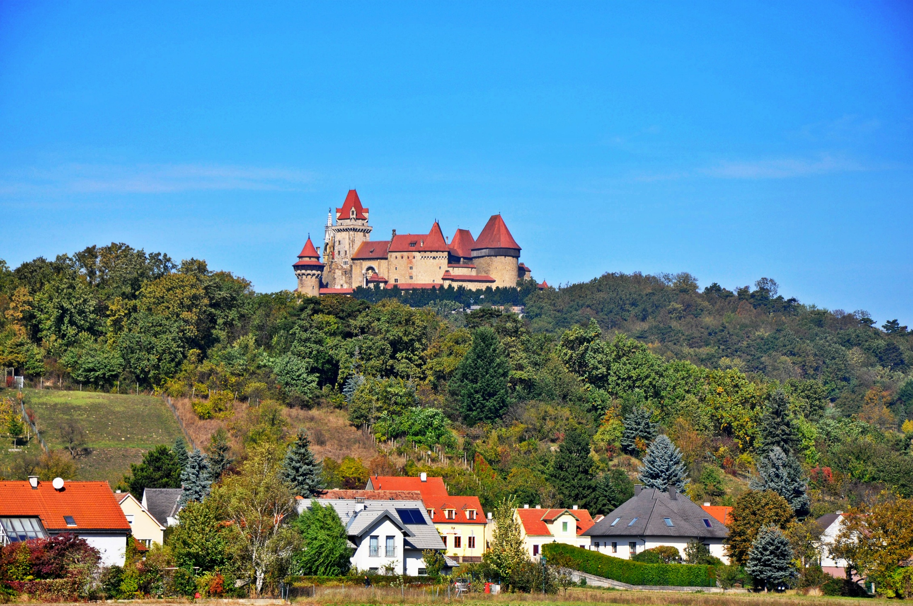

Our Dataset
SPRIGHT (SPatially RIGHT) is the first spatially focused, large scale vision-language dataset. It was built by re-captioning ~6 million images from 4 widely-used datasets (CC12M, Segment Anything, COCO validation, and LAION Aesthetics).
The image features two old-fashioned cars parked next to each other, with one being a vintage black car and the other being a purple car. The black car is parked in front of the purple car, and both cars are positioned next to a building. The black car is larger than the purple car, and the purple car is parked behind the black car.
The red and black purses are placed next to each other on a glass shelf. The red purse is on the left side and the black purse is on the right side.
The image features a bucket filled with ice and three cans of beer placed on top of it. The cans are positioned in a triangular arrangement, with one can on the left side, one on the right side, and the third one in the center. The bucket is larger than the cans, and the cans are placed on top of the bucket, creating a visually appealing and refreshing scene.
The image features a white and red sports car driving on a race track. The car is positioned on the left side of the image, and it is relatively small compared to the vast empty space surrounding it. The car is also driving on a road that is adjacent to a mountain, which adds to the overall scenery of the image.
The image shows a large red building with a sign in front of it. The building is situated next to a road, and there are two potted plants on the sidewalk in front of the building. The potted plants are relatively small in comparison to the large building, and they are positioned on the left and right sides of the building. The sign in front of the building is also relatively small compared to the building and the potted plants.
The image features a large red truck parked on a dirt road, with a mountain in the background. The truck is positioned in the foreground, occupying a significant portion of the image, while the mountain is in the background, providing a sense of scale and depth to the scene.
The image shows a large structure with a lot of steel beams and scaffolding. The structure is being built inside a large building, and the scaffolding is being used to support the construction process. The steel beams are of various sizes, with some being larger and more prominent than others. The scaffolding is also of different sizes, with some being larger and more prominent than others. The overall scene is a complex network of steel beams and scaffolding, creating a sense of depth and complexity in the image.
The image shows a group of houses situated on a hillside, with some houses being closer to the foreground and others further back. The houses are surrounded by trees, creating a picturesque and serene landscape. The houses are of various sizes, with some being larger and more prominent than others. The overall scene is a mix of natural and man-made elements, showcasing the harmony between the houses and their environment.

The blue cell phone is sitting on a white surface, with the back of the phone facing the camera. The phone is large compared to the white surface it is placed on.

The image features a large castle situated on top of a hill, with a village of houses located below it. The castle is significantly taller than the houses, and the houses are spread out in the valley below the castle, creating a picturesque scene with the castle towering over the village.
The image shows a group of boats docked together in a harbor, with some boats being larger and others smaller. The boats are parked in a line, with some boats being closer to the foreground and others further in the background. The boats are positioned in a way that they are adjacent to each other, creating a sense of unity and organization within the harbor.